Hebdomad
A World Historical Shitpost

by Jørgen Agosto Comgall
edited with an introduction by Ludovico Ambrosius
Copyright 2022
by Jørgen Agosto Comgall
and Ludovico Ambrosius
ISBN: 979-8-8366-8980-3
Introduction
I commend wholeheartedly to the reader the book he holds in his hands: Hebdomad: A World-Historical Shitpost, by my friend and esteemed colleague Profesor Jørgen Agosto Comgall. A few words of introductions are appropriate, both to Comgall and to his work, for neither have been made known to the public prior to this enigmatical volume, and yet both he and it are or should be world-historical figures in their own right.
Many evenings and late into the night I spent with Comgall discussing this book's principal subject, his theory of the seven ages of mankind. In a way it is simple enough to state: as there are seven ages in a man's life, there are seven ages of mankind, no more no less, and every aspect of every time and every place can be characterized as belonging to one or more of these ages. Simple to state, but containing immense complexities. Even today I do not profess to understand this theory's full significance. Comgall worked on the manuscript of Hebdomad for, it seems, perhaps one year, beginning in August '20 and breaking off abruptly in August '21. From our conversations over the last half-decade, however, it is clear that the idea had haunted him all the time that I have known him, and I suspect longer. He would occasionally vacillate on this or that aspect of the theory, but its basic structure—the seven ages, the analogies between them, projection into an imagined eighth—were invariant. I do not know (to invoke his favorite category of metaphor, the mathematical) what function his tweaks sought to maximize while preserving this invariance, and neither do I know if he deemed himself to have succeeded.
This uncertainty is not solely the result of Comgall being unavailable for questioning. Comgall's train of thought had always been momentous, singularly difficult to assess or alter, for others and perhaps also for himself. On a Friday in May '21, some months before his disappearance, he presented me with a fair copy of Part III and a request for comment. I read the draft over a weekend and that Monday returned detailed notes, but on reading the final draft I found that none of my suggestions had been incorporated, and what changes had been made were entirely orthogonal to the thrust of my objections. Yet he also sent me an elaborate letter of thanks, in which he swore that my comments had proven indispensable to the development of the hebdomadal idea. Since he may at that time have already abandoned any intention to see Hebdomad through to publication, we will never know whether he said this in earnest or only as a kind of polite fiction. From my knowledge of Hebdomad's composition the former possibility is difficult to imagine, but from my knowledge of Comgall's character the latter seems equally implausible.
I first met Comgall when I was recruited to teach at the University, at which time he was just finishing up his doctorate. Upon submission of his dissertation he was immediately offered a professorship in the philosophy of the history of philosophy of history by an all but unanimous vote, the one dissenting ballot being that of his faculty supervisor, whose complaints of perfectionism and resistance to revision were dismissed at the time as self-contradictory grumbling, but today, I must admit, seem all too plausible. At no time, nevertheless, did the St. Isidore faculty ever regret its decision. Comgall's dissertation project, a masterful interpretation of the role of the ocean in the new science of Giambattista Vico, he refused to submit to publication, declaring it irredeemably flawed. Instead, he immediately commenced work on a comparative study of St. Augustine, Vico, and René Girard, and began teaching a class focused on these three figures. It proved extraordinarily popular, among faculty as well as students, although I myself never participated.
(It is likely, I realize, that the reader is not familiar with the University of St. Isidore. Set this ignorance aside. Know simply that the University can be found in far northern California; that it has few professors, and admits fewer students; and that its eponymous saint, Isidore of Seville, was the last scholar of the ancient world, one of the first encyclopedists, and the inventor of several punctuation marks, and in an unofficial capacity has become the patron saint of the internet. As an infant, the legend goes, Isidore was lost in the vegetable garden and discovered only days later, after a swarm of bees had begun to build honeycomb inside his mouth.)
My friendship with Comgall began when he identified me as a scholar of board game design, and approached with a proposal to develop a game based on Vico's theory of the transition from the Age of Gods to the Age of Heroes. The game's rules, he insisted, must embody the severe poetry of the Twelve Tables, such that the playing of it would do more to clarify Vico's thought than a score of linear close readings. This project initiated our collaboration, but proved to contain certain insuperable difficulties (the details are unimportant) and soon fell out of view. Our talk rambled from the Dark Ages to the whaling industry to so-called "Deep Learning" artificial intelligence, about which he was in a way more optimistic than myself. From AI pedagogy we turned to Shakespeare's King Lear, and on the night of that conversation, so far as I was concerned, the Seven Ages idea was born. When we spoke it did not seem to me something he was inventing on the fly, but rather as if he had read it somewhere and sought to recall it to mind page by page, analogy by analogy, distinction by distinction; but when I asked what I should read to better understand the seven ages, he muttered, as if ashamed, that he had not yet begun to write. Some years later he made vague allusions to the effect that work had begun, while swearing me to deepest secrecy and denying vigorously that it was ready for the public eye. It is my belief that at no time before his disappearance did he share the manuscript of Hebdomad with another living soul.
I cannot reveal to the reader this book's true significance, for that significance will become entirely apparent only when the world changes utterly and the works of this age no longer live. But I can offer my own impressions.
My principal objection to the draft was its elliptical prose. To do justice to the chosen topic, I told him, would require seven hundred pages, not a bare seventy. On reflection, even that would be insufficient: each sentence of what would become Part III itself deserves a monograph. Comgall refused, however, to show his work. What he has written is not an argument based on evidence, but a set of conclusory assertions interlocking so tightly that it is sometimes difficult to imagine a single claim being altered. Yet at other times, the words seem to float so far away from their referents that they could mean almost anything at all. Based on my conversations with Comgall, I believe that he had a very clear meaning in mind for each, and indeed could have written every one of those monographs (though I cannot vouch for the scholastic integrity of the footnotes). From a close comparison of the final (I do not say finished) manuscript with the notes I took on the draft (I was not allowed to retain a copy of the draft itself), I know also that he did adjust his claims at innumerable points, often in infinitely subtle ways. I do not believe he would have wanted me to provide examples.
I must, I suppose, say a word about the title, to which I strenuously objected but on which, as on so much else, Comgall was intransigent. "Hebdomad" is clear enough, and indeed too clear, in my judgment a weak name for such a strong book. "World-Historical" names the book's topos, and insofar as it quibbles on that topos to make also a concealed boast, I for one believe the boast warranted. But "Shitpost" (alternative spelling: "Shitpoast") is unforgivable. Vulgarity aside, it seems descriptively inaccurate. In one widely available definition, a shitpost is "a post of little to no sincere insightful substance," "low effort/quality," "with the sole purpose to confuse, provoke, entertain," often "surreal [and] out-of-context," differing from "memes" in having "no template," from "spam" in not needing "repetition," from "bait" in not being "designed for response." Perhaps Comgall in his darker moments imagined all of these descriptors to apply, and certainly Hebdomad is confusing provoking entertaining surreal original inimitable. But as for low quality, subtitles are no place for self-pity or self-exculpation. And insofar as this half of the subtitle was meant not as flagellation but as boast, it does not convince: Hebdomad is surely if anything an effortpost.
Despite my misgivings I have left Comgall's title intact, as I have every word of his manuscript, typos excepted—I have corrected several of Comgall's, and have not, I hope, introduced too many of my own (remember that the manuscript required manual transcription). I should note that the manuscript includes four poems, of which Comgall is not the writer: I am. One was written by me and previously published; Comgall read it in manuscript and, though he never asked my permission to include it, I hereby grant it freely, if such permission is required given my status as editor of this volume. The other three were written by me upon Comgall's request and at his direction, and on these he can be considered in a sense the true author. I do not know the provenance of the Frontispiece. I had not imagined Comgall to be a draftsman, but neither have I identified any business correspondence or other evidence that the piece was commissioned. The true draftsman, if it is not Comgall himself, is invited to come forward with evidence to that effect. I am uneasy critiquing a stylist who is perhaps unaware of his exposure, but I do not much care for the internet cartoon stick figure style.
After opening epigraph and picture and poem and poem, the reader of Hebdomad finally encounters a few pages of expository prose—seven paragraphs, to be precise, under the heading "What's All This Then?" Each must judge for himself the validity of Comgall's explicit philosophico-historical project, Augustine and Vico and Catholic historicism and all that. I, for one, would place less emphasis on the self-accounting of a man who seems to have been very much an enigma to himself as well as others, and more on the section immediately following, what the headers for Part I refer to as a "partial bibliography." Partial in what sense, the reader may ask? That it fails to contain every book Comgall ever read on any topic relevant to the book's argument (which is almost any topic imaginable), is obvious. That it is only the books to which Comgall was partial, is a tempting but ultimately untenable interpretation. Several of the books on the list I know, or thought I knew, Comgall to hold in quite low esteem. Perhaps some books warrant inclusion in a kind of anti-canon of philosophical history? But then one notices the absence of Marx and Spengler, despite the explicit reference to them in the previous section. I find myself entirely unable to account for their absence, except by hypothesizing that Comgall in fact had never read either of them, and scrupled to include them in a list of works referenced, despite being entirely willing to pass judgment on their work in the heat of argument.
So prose, list, and another poem; and then into Part II, almost none of whose words are Comgall's own; and then Part III, the heart of the Hebdomad project, seven surveys of the seven ages from seven different angles, all written in a kind of unrelenting allusive imagistic prose that raises more questions than it answers. Then a truncated Part IV, in which for the first time since Part I's "statement" Comgall allows us to breathe, and speaks in plain English, theoretically and practically, of how the arc of history bends into the future. Then, to close, one last poem, "The Eighth Day," not written for Hebdomad but, I agree with Comgall, oddly appropriate. I suspect, though it is the shortest, that this Part gave Comgall the most trouble of all four, for he was always happier thinking of the past than of the future. I will even admit that I would not be surprised if it was what I imagine to have been his struggles with these closing pages that led Comgall so recklessly to abandon the Hebdomad manuscript one year ago.
Comgall spent thirteen years at the University: from '08-'15 as a doctoral candidate, from '15-'21 as a professor. He disappeared in August '21, just before the beginning of the autumn term, which caused some consternation among the faculty, for the course he was scheduled to teach, on the subject of which he alone was qualified to lecture, was full and indeed oversubscribed. I believe myself to have been the last mortal soul to see Comgall alive, for on a windy day in late August I visited his house and walked with him out to the pier where he kept his boat. I am no sailor, but remember that the vessel was of fiberglass and had two parallel hulls, something like a catamaran or an outrigger canoe. The sail was furled and so I do not know its shape, but somehow I imagine it to have been triangular. The term started in ten days, and he was stocking up for an ocean voyage of at least a week, but when I inquired he insisted that he would be back in time for convocation. We walked back to his house, I put into his hands a copy of my just-published book (Roll, Strike, Die, and Other Poems, in which he could have found a version of the poem which he sought to include in Hebdomad) and we said farewell. No one has seen him since.
When Comgall did not show up to teach his class in early September the speculation began, and my last-in-time claim was quickly established. A report was filed, but after a quick search of his house and the surrounding coastline the investigation stalled. We all are convinced that he must have capsized and drowned somewhere in the vast expanse of the Pacific. Many suspect that the likelihood of such a disaster was within his knowledge, and perhaps even within his intent. For the last year his house, owned by the university and tied to his endowed chair, has been unoccupied, apart from a caretaker who cleans and dusts and the like. Perhaps fittingly, the endowment instrument indicates that it is to be filled again only after it has sat vacant for seven years.
For the next six months I tutored students in the ludic arts, prepared my hives for winter, and wrote what may be too many lines of poetry, or may be too few. At all times I tried not to think about my colleague Jørgen Agosto Comgall, who found himself lost at sea, or about the house of the Professor of the Philosophy of the History of the Philosophy of History, sitting empty only a few blocks from my own, or about the Hebdomad manuscript which I knew lay unread within it, accumulating dust which every few weeks would be brushed away by one entirely ignorant of its importance. Eventually curiosity outweighed reluctance, and a few months ago I used the key Comgall had lent me to enter his house and remove the manuscript from his desk. I found there also the frontispiece wrapped in tissue paper, and instructions regarding the volume's intended layout. Given the understanding that existed between us concerning his work, I did not and do not consider this any form of larceny. On reading it I reached the conclusions mentioned above concerning Comgall's habits of revision; I also realized that the true crime would be failing to publish Hebdomad simply because we do not know Comgall's intentions regarding the manuscript.
The genius of Hebdomad, as you are about to see, does not lie in the bare schema of seven ages, summarized in an instant, but in the virtuoso pattern Comgall weaves upon that septuple framework, in a feat which proves the framework competent to bear the strain of history. To follow that pattern some knowledge of every historical age will be helpful (and the more history one knows the more intricate the pattern will appear), but such knowledge is hardly a precondition, any more than it is a precondition to absorbing a false historical outlook, whether through belief in a "Dark Ages," a "State of Nature," or a moment when "we became modern." Comgall struggles somewhat in Part I to describe the purpose of his project. I would put it like this: knowing well that history follows myth, Comgall offers us a historical mythology worthy of our historical moment. So long as this moment is remembered, I trust that Hebdomad will not lack for readers.
Ludovico Ambrosius
University of St. Isidore
August 2022
I
*
All the world's a stage,
And all the men and women merely players;
They have their exits and their entrances,
And one man in his time plays many parts,
His acts being seven ages. At first, the infant,
Mewling and puking in the nurse's arms.
Then the whining schoolboy, with his satchel
And shining morning face, creeping like snail
Unwillingly to school. And then the lover,
Sighing like furnace, with a woeful ballad
Made to his mistress' eyebrow. Then a soldier,
Full of strange oaths and bearded like the pard,
Jealous in honour, sudden and quick in quarrel,
Seeking the bubble reputation
Even in the cannon's mouth. And then the justice,
In fair round belly with good capon lined,
With eyes severe and beard of formal cut,
Full of wise saws and modern instances;
And so he plays his part. The sixth age shifts
Into the lean and slippered pantaloon,
With spectacles on nose and pouch on side;
His youthful hose, well saved, a world too wide
For his shrunk shank, and his big manly voice,
Turning again toward childish treble, pipes
And whistles in his sound. Last scene of all,
That ends this strange eventful history,
Is second childishness and mere oblivion,
Sans teeth, sans eyes, sans taste, sans everything.
– William Shakespeare, As You Like It
*

Table of Contents
Hebdomad, the book you hold, holds wisdom of a lifetime.
For as the lifetime of a man proceeds through seven stages,
So the Life of Man through seven ages does extend.
This Hebdomad reveals for the first time these subdivisions,
And how they resonate and ring and rhyme with one another.
The book reveals sequentially these seven's many aspects,
Some sevens I'll lay out for you as this book does proceed.
Imagine each age in its own exemplary place and time;
With its own architecture, mathematics, music, art,
Its language and the flourishes that flourish there within;
Each has its map of true and false, of mind and beast and man,
And various masks to represent the persons on the board;
Imagine, you, that is to say, the seven sevens here.
Afric – Egypt – Roman – Europe – 'Tlantic – 'Merica – Space
Fire – Altar – Temple – Cathedral – Meeting-house – City – Diode
Speech – Picture – Writing – Codex – Type – Telegraph – Signal
Animal – Dual – Causal – Triune – Ration – History – Ego
Mask – Seal – Coinage – Arms – Flag – Logo – Avatar
Communal – Hierarch – Civic – 'Clesial – Private – Abstract – Sole
Prime – Archaic – Classic – Midst – Modern – Mod'ist – Contempo
His Acts Being Seven Ages
I
A flood, they sing, then a prismatic bow.
The waters ebb away. Round flickering fires
The people huddle closely with their kin,
Whisper of other blood beyond the trees.
They couple without law, not without sin,
Feel skin pierced through by forest's thorns and briars,
Know not of times to reap or times to sow.
II
Then: cryptic hieroglyphics paint a scene
Of megaliths built up to greet the stars,
The peace of god-kings levying their corn
And their daughters to feed and bed his guards.
Gold rings and golden carcanets adorn
Unseen immortals. In their brazen cars
The shepherds leave a waste to cross the sea.
III
Accounting births chirography, divorces
Empire from wisdom's higher institute.
Each sovereign pays a soldier to secure
Slaves to mine silver for the mint; meanwhile
Across the square monologist seeks cure
For double death, blinking its absurd root—
But one man yokes the base and noble horses.
IV
So: bind his words in codices, and raise
Them high before the sacramental rose!
Beneath petrific forest canopy
Endlessly ring them round the amorous fires.
Love's debt forborn, and in full panoply,
Depart the manors, face the paynim foes:
These double swords the chessboard cannot faze.
V
Till Presses start—a Fraktured Revolution
Encompasses the World in Caravels—
Encounters peoples Queer and Cannibal—
In austere clapboard Houses mercantile
Frames between Characters compatible
Sweet Dialogue—and when the Heart Rebels,
Defaults back to a dubious Constitution.
VI
BLOODY BATTLE ABROAD / the wires scream
Across the sky / as towers / rise to scrape
Maximal value from the / abstracted corpse
Of billennia-old land / / urban vanguards
Imbibe ideas / from the ironworks
Poised / exquisitely / twixt raze and rape
Analyzing within / a shifting scheme
VII
Now time closes itself. Numbed fingers glide
By hidden laws across a flickering screen
To choose a solitude from perverse lack
And lawlessness. Now each does as they please.
But soon… forgetting shatters in a crack…
A slice… a pain… from forests of protein
Gene-skeins of death loose in the hematic tide…
What's All This Then?
To subitize—some experimental psychologists decided in 1949—means to look at an array of objects and simply know, without counting, how many there are. Scatter one, two, three, perhaps four items on a table, and take a glance at them, subito. In the blink of an eye you'll know how many items are there—one, or two, or three, or four. But any more, and it gets tricky, and eventually impossible. Imagine a four by four array of items. On seeing it you'll immediately know that it's four by four, but it'll take another half-beat of the pulse before you hear yourself think "sixteen." In between, in depends. Five items in a pentangle; six in a two by three array; seven in a hexagon with center point—for these subitizing may be possible. But they have to be arranged just right, or you'll have to stop and count.
This book arranges historical heptads so that they can be seen without stopping to count. This does not make its argument a historical one. Part II has a historical character but is less argument than anthology, consisting of seven extracts from seven distinct texts. Part III makes an argument, or at least tells a story, but is not history because apart from the stage-setting first section, "Time—Place—Manner," it contains almost no particulars. Whenever a proper name is mentioned, the intent is not to inform the reader, but to recall to mind some well-known complex of events, images, impulses, ideas—in short, to serve as a kind of shorthand. Apart from these allusions, the book speaks entirely in generalities. Shakespeare, drawing on a long tradition of archetypal partitions of the human lifespan, gives us the Infant, the Schoolboy, the Lover, the Soldier, the Justice, the Pantaloon, the Second Child. This book offers a parallel seven, referred to, for reasons described in Part III's final section, "Terms—Histories—Eternities," as the Primitive, the Archaic, the Classical, the Medieval, the Modern, the Modernist, the Contemporary. Upon completing this book the reader should begin to recognize these seven at play wherever he looks.
The idea of dividing history into various ages, each following inexorably from the one proceeding, is of course an old one. The Greeks spoke of ages of gold, silver, bronze, iron, declining gradually from greatness, peace, and contentment to weakness, violence, and suffering, the latter being the lot of the present day. The metallic metaphor hinted at the possibility of a natural cycle, a renewed golden age to rise from the decadent mud, as it had uncountably many times before. This book takes for granted that any effort to revive the Golden Age mythology, to dwell in dreams of Atlantis or Hyperborea, will be no more successful among the very online of today than among the decadent theosophists of a hundred years ago. The early Christians spoke of six ages, accounting them in terms of salvation history: Adam to Noah, Noah to Abraham, Abraham to David, David to the Babylonian Captivity, the Captivity to Christ, Christ to the present; as the Christian era wore on a tripartite division became more common: Adam to Moses, Moses to Christ, Christ to the present; that is, natural law, Mosaic law, the law of love. The Christian approach could admit no cycles, but it too thought the present day at the end of the sequence. This Salvation History mythology has more to recommend it, but given the dramatic developments of the last seven hundred years, its insistence that history ended in 33 AD cannot fully satisfy.
This book's seven-part sequence differs from the Classical Greek and Christian schemata in many ways. Most important, perhaps, is that it does not distinguish its members from one another primarily with reference to some scalar quantity "greatness remaining" or "revelation completed," with the present necessarily possessing the maximum or minimum amount. Rather, it shows how the ages differ from one another in every aspect. Which is not to say that there are no larger patterns. Two such patterns are particularly worth mentioning. First, the sequence is chiasmic. The Contemporary in many ways parallels the Primitive; the Modernist, the Archaic; the Modern, the Classical; while the central Medieval era has something in common with all three pairs. Second, the movement of history does turn out to have something like a direction, an increase in one quality and corresponding decrease in its opposite. But this quality is not grasped from our experience of the world and projected back into our fantasies about some earlier time. Rather, it emerges from contemplation of the schema itself. Different heptads sketched in Part III will suggest different aspects of this overarching trajectory: in "Architecture, Mathesis, Music, Mimesis," a shift from openness to closure; in "Interpretations," a shift from spirit to matter; in "Energy, Family, Finance, Violence," a shift from male to female.
These features align this book's seven-part schema less with Classical accounts of the ages of the world, and more with Modernist accounts of the ages of human civilization. The latter differ from the former in that they do not treat historical change as having an external cause, natural or divine, unchanging in its operation and so having as its direct effect the filling up or draining of some reservoir. Rather, historical change results from the unfurling of the logic of human consciousness through human action within an inhuman world; the only constant is that it is always humanity at work. By far this book's greatest influence has been Giambattista Vico, author of The New Science. Its first three ages, Primitive, Archaic, and Classical, are borrowed wholesale from Vico with only minor modification, while its fourth and fifth, Medieval and Modern, in large part respond to Vico's perhaps overly simplistic theory of the ricorso, of decadence leading to civilizational collapse and so a return to the beginning of the three-age cycle. This book departs from Vico, that strange lonely figure of the Neapolitan Enlightenment, born both too early and too late, in that it does not understand history ever to repeat itself, although it does rhyme. This book aims to suggest that the fourth age rhymes most of all.
This book is not an endeavor in philosophy of history. But some explanation should be offered for the exaltation of Vico over his better-known successors in historicism. Hegel's triad of thesis, antithesis, synthesis, is entirely too optimistic about the potentialities of Reason alone, as one would expect from an author writing early in the Modernist phase. Spengler's late Modernist tetrad of spring, summer, autumn, winter, in contrast, is entirely too pessimistic, a kind of naive empiricism bewitched by natural science. That central Modernist Marx has a somewhat plausible five-stage economic history—tribalism, slavery, feudalism, mercantilism, capitalism—which this book borrows with modification, tacking on a first and last, but his prognostications are dubious, and this because he overestimates his ability to reduce the movement between these stages to a purely material cause, and, further, oversimplifies the nature of that material. This book does take the means of production seriously, while emphasizing as well, following McLuhan, the means of communication—see Part III's "Language & Literature"; and, following Girard, the means of sacralization—see Part III's "Persons & Performances." But whether economic, informational, or libidinal, determinism is an error, for it requires stipulating some objectively unchanging feature of the human mind, and so is necessarily dehumanizing. The book solely attends to what Vico calls "the modifications of the mind of him who meditates."
Vico, McLuhan, and Girard together constitute a tradition of Catholic historicism, to which this book is indisputably an heir. A fourth member of the tradition, and another substantial influence though his work bears less directly on the question at hand, is John Henry Newman, who theorized the development, as opposed to the evolution, of theological ideas. Such historicism accepts the monotonicity of Salvation History, but sees the Resurrection not to end history so much as to inaugurate a new phase, one whose complexity is still unfolding. To reduce from seven ages to three the Catholic historicist would put the boundaries at the Crucifixion and the discovery of the Americas. But such a triad would be far less enlightening. The purpose of this book is not to be true—an interpretation can never be true or false—but rather to shed light, to make the heptads visible. Once you can see them, you can decide for yourself what they tell us about what we have done, and what we are doing, and what we will do. Part IV offers further reflections on the subject of what, if anything, we can hope will succeed the seventh age.
A Selection of Works Referenced
Moses, Pentateuch (c. 1310 BC)
Plato, Timaeus (c. 380 BC)
Augustine of Hippo, The City of God (c. 420 AD)
Isidore of Seville, Etymologies (c. 620 AD)
Dante Alighieri, Divine Comedy (1308-20)
William Shakespeare, Comedies, Histories, & Tragedies (1621)
Thomas Hobbes, Leviathan (1651)
Giambattista Vico, The New Science (3rd ed. 1744)
William Blake, Jerusalem (1820)
Thomas Carlyle, Sartor Resartus (1834)
Wilhelm Gottfried Hegel, Introduction to the Philosophy of History (1837)
John Henry Newman, Essay on the Development of Christian Doctrine (1845)
Herman Melville, Moby-Dick; or, the Whale (1851)
Orestes Brownson, The American Republic (1866)
Lev Tolstoy, War and Peace (1869)
Friedrich Nietzsche, The Genealogy of Morals (1888)
Max Weber, The Protestant Ethic and the Spirit of Capitalism (1905)
Henry Adams, The Education of Henry Adams (1907)
Walter Lippmann, Drift and Mastery (1914)
Johann Huizinga, The Autumn of the Middle Ages (1919)
Georg Lukacs, The Theory of the Novel (1916)
Sigmund Freud, Civilization and its Discontents (1930)
Erik Peterson, Monotheism as a Political Problem (1935)
Erich Auerbach, Mimesis (1946)
Mircea Eliade, The Myth of the Eternal Return (1949)
Carl Jung, Foreword to the I Ching (1949)
E.K. Kaufman &c, The Visual Discrimination of Number (1949)
Erwin Panofsky, Gothic Architecture and Scholasticism (1951)
Eric Voegelin, The New Science of Politics (1952)
David Jones, The Anathémata (1952)
Northrop Frye, Anatomy of Criticism (1957)
Hannah Arendt, The Human Condition (1958)
William F. Lynch, S.J., Christ and Apollo (1960)
Marshall McLuhan, The Gutenberg Galaxy (1962)
Frank Kermode, The Sense of an Ending (1967)
Kenneth Clark, Civilisation (1969)
Alan John Villiers, Men, Ships, and the Sea (1973)
René Girard &c, Things Hidden Since the Foundation of the World (1978)
Stanley Cavell, Pursuits of Happiness (1981)
Walter J. Ong, S.J., Orality and Literacy (1982)
Benedict Anderson, Imagined Communities (1983)
Walker Percy, Lost in the Cosmos (1983)
Alisdair MacIntyre, Whose Justice? Which Rationality? (1988)
Charles Sellers, The Market Revolution (1991)
James Conant, The Search for Logically Alien Thought (1991)
Gene Wolfe, The Solar Cycle (1980-2001)
Miguel Tamen, Friends of Interpretable Objects (2001)
Sarah Beckwith, Signifying God (2001)
Remi Brague, Eccentric Culture (2002)
Brett Bourbon, Finding a Replacement for the Soul (2004)
Stephanie Coontz, Marriage, a History (2005)
Robin Hanson & Eliezer Yudkowsky, The AI Foom Debate (2009)
David Graeber, Debt (2011)
Thomas Pfau, Minding the Modern (2013)
Matthew Weiner, The Romanoffs (2018)
Ross Douthat, The Decadent Society (2020)
Scott Alexander, Slate Star Codex (2013-20)
Jan Lucassen, The Story of Work (2021)
Zero HP Lovecraft, They Had No Deepness of Earth (2018-21)
The Author Apologizes for His Ambition
Cataloguing caveats
Drowns the thinks in the think nots.
"Hundred thousand years ago
Man wandered the Siberian snow";
"Myriad years he sowed his seed
By Tigris, Ganges, and Yangtze";
"Roma conquered the known world,
But the map hadn't yet unfurled."
And "Europe's mere peninsula,
Minor, off great Eurasia";
And "Red Injuns were there before
Invaders showed up at their door";
And "All America's hijinks
Aside, the world's full of Chinks."
"Only the far too online NEETs
Think twitter's realer than the streets."
What of it? If I simplify
The multitudes, I simplify
To concentrate the weary mind
On the grand tale of humankind.
One thing, though, Shakespeare got wrong
In Jacques's captivating song:
The seven parts each man must play
He plays together. When we lay
And mewl and puke in nurse's arms,
Already looms there the alarms
We'll set off when the darkling plain
We sweep across; and yet again
Just look to see the oblivion
We'll feel while teeth, eyes, taste, are gone;
Schoolboy, lover, justice, scholar,
There, but in a frame made smaller
From being lately in the womb.
'Stead of a tour room to room,
Think how, within a single face,
Considering one side you trace
'Cross the brow and lower jaw
Devise of the father's pa;
Then from the other, in the nose,
The clear aspect of one who knows;
From the front the lips shout out
Mother's sister's famous pout.
My project's not taxonomy,
But human physiognomy—
Not a death-mask lifted from
The last man's face gone cold and numb
But breathing, living portraiture
Of Man and his ten-and-three-score.
Only this? And Nothing. More.
II
*
*
And the Lord spake unto Moses, saying, Speak unto the children of Israel, that they bring me an offering: of every man that giveth it willingly with his heart ye shall take my offering.
And this is the offering which ye shall take of them; gold, and silver, and brass, And blue, and purple, and scarlet, and fine linen, and goats’ hair, And rams’ skins dyed red, and badgers’ skins, and shittim wood, oil for the light, spices for anointing oil, and for sweet incense, onyx stones, and stones to be set in the ephod, and in the breastplate.
And let them make me a sanctuary; that I may dwell among them. According to all that I shew thee, after the pattern of the tabernacle, and the pattern of all the instruments thereof, even so shall ye make it.
And they shall make an ark of shittim wood: two cubits and a half shall be the length thereof, and a cubit and a half the breadth thereof, and a cubit and a half the height thereof. And thou shalt overlay it with pure gold, within and without shalt thou overlay it, and shalt make upon it a crown of gold round about. And thou shalt cast four rings of gold for it, and put them in the four corners thereof; and two rings shall be in the one side of it, and two rings in the other side of it. And thou shalt make staves of shittim wood, and overlay them with gold. And thou shalt put the staves into the rings by the sides of the ark, that the ark may be borne with them. The staves shall be in the rings of the ark: they shall not be taken from it. And thou shalt put into the ark the testimony which I shall give thee.
And thou shalt make a mercy seat of pure gold: two cubits and a half shall be the length thereof, and a cubit and a half the breadth thereof. And thou shalt make two cherubims of gold, of beaten work shalt thou make them, in the two ends of the mercy seat. And make one cherub on the one end, and the other cherub on the other end: even of the mercy seat shall ye make the cherubims on the two ends thereof. And the cherubims shall stretch forth their wings on high, covering the mercy seat with their wings, and their faces shall look one to another; toward the mercy seat shall the faces of the cherubims be. And thou shalt put the mercy seat above upon the ark; and in the ark thou shalt put the testimony that I shall give thee.
And there I will meet with thee, and I will commune with thee from above the mercy seat, from between the two cherubims which are upon the ark of the testimony, of all things which I will give thee in commandment unto the children of Israel.
*
SOCRATES: Then have I now given you all the heads of our yesterday's discussion? Or is there anything more, my dear Timaeus, which has been omitted?
TIMAEUS: Nothing, Socrates; it was just as you have said.
SOCRATES: I should like, before proceeding further, to tell you how I feel about the State which we have described. I might compare myself to a person who, on beholding beautiful animals either created by the painter's art, or, better still, alive but at rest, is seized with a desire of seeing them in motion or engaged in some struggle or conflict to which their forms appear suited; this is my feeling about the State which we have been describing. There are conflicts which all cities undergo, and I should like to hear some one tell of our own city carrying on a struggle against her neighbours, and how she went out to war in a becoming manner, and when at war showed by the greatness of her actions and the magnanimity of her words in dealing with other cities a result worthy of her training and education. Now I, Critias and Hermocrates, am conscious that I myself should never be able to celebrate the city and her citizens in a befitting manner, and I am not surprised at my own incapacity; to me the wonder is rather that the poets present as well as past are no better—not that I mean to depreciate them; but every one can see that they are a tribe of imitators, and will imitate best and most easily the life in which they have been brought up; while that which is beyond the range of a man's education he finds hard to carry out in action, and still harder adequately to represent in language. I am aware that the Sophists have plenty of brave words and fair conceits, but I am afraid that being only wanderers from one city to another, and having never had habitations of their own, they may fail in their conception of philosophers and statesmen, and may not know what they do and say in time of war, when they are fighting or holding parley with their enemies. And thus people of your class are the only ones remaining who are fitted by nature and education to take part at once both in politics and philosophy. Here is Timaeus, of Locris in Italy, a city which has admirable laws, and who is himself in wealth and rank the equal of any of his fellow-citizens; he has held the most important and honourable offices in his own state, and, as I believe, has scaled the heights of all philosophy; and here is Critias, whom every Athenian knows to be no novice in the matters of which we are speaking; and as to Hermocrates, I am assured by many witnesses that his genius and education qualify him to take part in any speculation of the kind. And therefore yesterday when I saw that you wanted me to describe the formation of the State, I readily assented, being very well aware, that, if you only would, none were better qualified to carry the discussion further, and that when you had engaged our city in a suitable war, you of all men living could best exhibit her playing a fitting part. When I had completed my task, I in return imposed this other task upon you. You conferred together and agreed to entertain me to-day, as I had entertained you, with a feast of discourse. Here am I in festive array, and no man can be more ready for the promised banquet.
*

*
SCENE VI. Another room in the Castle.
Enter Horatio and a Servant.
horatio:
What are they that would speak with me?
servant:
Sailors, sir. They say they have letters for you.
horatio:
Let them come in.
[Exit servant.]
horatio:
I do not know from what part of the world
I should be greeted, if not from Lord Hamlet.
Enter Sailors.
first sailor:
God bless you, sir.
horatio:
Let him bless thee too.
first sailor:
He shall, sir, and't please him. There's a letter for you, sir. It comes from th'ambassador that was bound for England; if your name be Horatio, as I am let to know it is.
horatio:
[Reads.]
'Horatio, when thou shalt have overlooked this, give these fellows some means to the King. They have letters for him. Ere we were two days old at sea, a pirate of very warlike appointment gave us chase. Finding ourselves too slow of sail, we put on a compelled valour, and in the grapple I boarded them. On the instant they got clear of our ship, so I alone became their prisoner. They have dealt with me like thieves of mercy. But they knew what they did; I am to do a good turn for them. Let the King have the letters I have sent, and repair thou to me with as much haste as thou wouldst fly death. I have words to speak in thine ear will make thee dumb; yet are they much too light for the bore of the matter. These good fellows will bring thee where I am. Rosencrantz and Guildenstern hold their course for England: of them I have much to tell thee. Farewell.
He that thou knowest thine, HAMLET.'
Come, I will give you way for these your letters,
And do't the speedier, that you may direct me
To him from whom you brought them.
*
It was a Saturday night, and such a Sabbath as followed! Ex officio professors of Sabbath breaking are all whalemen. The ivory Pequod was turned into what seemed a shamble; every sailor a butcher. You would have thought we were offering up ten thousand red oxen to the sea gods.
In the first place, the enormous cutting tackles, among other ponderous things comprising a cluster of blocks generally painted green, and which no single man can possibly lift—this vast bunch of grapes was swayed up to the main-top and firmly lashed to the lower mast-head, the strongest point anywhere above a ship's deck. The end of the hawser-like rope winding through these intricacies, was then conducted to the windlass, and the huge lower block of the tackles was swung over the whale; to this block the great blubber hook, weighing some one hundred pounds, was attached. And now suspended in stages over the side, Starbuck and Stubb, the mates, armed with their long spades, began cutting a hole in the body for the insertion of the hook just above the nearest of the two side-fins. This done, a broad, semicircular line is cut round the hole, the hook is inserted, and the main body of the crew striking up a wild chorus, now commence heaving in one dense crowd at the windlass. When instantly, the entire ship careens over on her side; every bolt in her starts like the nail-heads of an old house in frosty weather; she trembles, quivers, and nods her frighted mast-heads to the sky. More and more she leans over to the whale, while every gasping heave of the windlass is answered by a helping heave from the billows; till at last, a swift, startling snap is heard; with a great swash the ship rolls upwards and backwards from the whale, and the triumphant tackle rises into sight dragging after it the disengaged semicircular end of the first strip of blubber. Now as the blubber envelopes the whale precisely as the rind does an orange, so is it stripped off from the body precisely as an orange is sometimes stripped by spiralizing it. For the strain constantly kept up by the windlass continually keeps the whale rolling over and over in the water, and as the blubber in one strip uniformly peels off along the line called the "scarf," simultaneously cut by the spades of Starbuck and Stubb, the mates; and just as fast as it is thus peeled off, and indeed by that very act itself, it is all the time being hoisted higher and higher aloft till its upper end grazes the main-top; the men at the windlass then cease heaving, and for a moment or two the prodigious blood-dripping mass sways to and fro as if let down from the sky, and every one present must take good heed to dodge it when it swings, else it may box his ears and pitch him headlong overboard.
One of the attending harpooneers now advances with a long, keen weapon called a boarding-sword, and watching his chance he dexterously slices out a considerable hole in the lower part of the swaying mass. Into this hole, the end of the second alternating great tackle is then hooked so as to retain a hold upon the blubber, in order to prepare for what follows. Whereupon, this accomplished swordsman, warning all hands to stand off, once more makes a scientific dash at the mass, and with a few sidelong, desperate, lunging slicings, severs it completely in twain; so that while the short lower part is still fast, the long upper strip, called a blanket-piece, swings clear, and is all ready for lowering. The heavers forward now resume their song, and while the one tackle is peeling and hoisting a second strip from the whale, the other is slowly slackened away, and down goes the first strip through the main hatchway right beneath, into an unfurnished parlor called the blubber-room. Into this twilight apartment sundry nimble hands keep coiling away the long blanket-piece as if it were a great live mass of plaited serpents. And thus the work proceeds; the two tackles hoisting and lowering simultaneously; both whale and windlass heaving, the heavers singing, the blubber-room gentlemen coiling, the mates scarfing, the ship straining, and all hands swearing occasionally, by way of assuaging the general friction.
*

III
Time—Place—Manner
When does man find himself, and where, and how will he leave it behind?
Sixty millennia ante Christe natum. Rains fall in the highlands. The infant man: by the shore of a great lake, naming the animals; with a stone axe, hollowing out a floating log; in a garment of roughly sewn hides, diving into the water. He drifts downriver, into the unknown world.

Nine thousand years ante Christe natum. Glaciers melt, the Nile rises and falls. The children of Noah: harvesting barley in sweat-soaked linen tunic; hauling copper-chiseled slab to flat-bottomed barge; numbering the stars arcing over the fertile world. Against the dawn horizon, the nomadic herds.
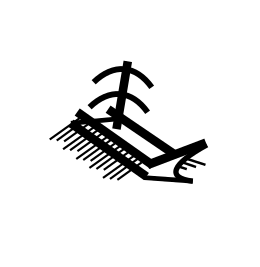Five hundred nine years ante Christe natum. Palaces collapse, bright bronze drowns in clamor of iron. Across the middle sea, the romance of Rome: hugging the coast in a shallow-keeled vessel; shipping grain from city to imperial city; chained to the three banks of oars, in the shadow of the trireme's sail, finding the whole world at peace. Rats scurry in the bilges.
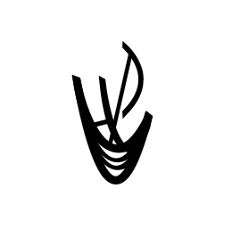Thirteen hundred nine anno Domini. Empire crumbles, its spirit lives on in manor and monastery, knight errant and mendicant. The fury of the martial Frank: in a high-masted hulk passing Gibraltar; curving north along Europe's western edge; heading inland up a broad river flanked by fields of wheat. The world divided, reflected back upon itself: back to open water.

Seventeen hundred seventy-six anno Domini. A deep-keeled caravel braves the unknown Atlantic and almost by accident doubles the world, three quarters ocean. Magistracy of the common Anglo: guarding the vessel with black powder cannon; filling it with salable goods; circulating on the trade winds. The land scorches his feet.

Nineteen hundred thirty-three anno Domini. America, a great machine that moves of itself. Clown-emperor America: from under the land, burning the fossilized remnant of deep antiquity; in power-woven cotton uniform, flooding its image across the world. A global frontier obliterates all islands.
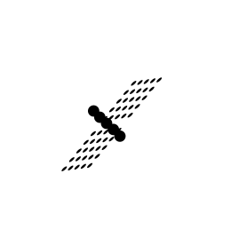Two thousand nine anno Domini. The foggy, hardly visible western shore. Dotage of the Bugman: sitting behind a glowing screen, processing data, draping garish synthetic fabrics across feeble flesh. In a flurry of silicon and rocket fuel, he aims to leave the world behind.
Architecture, Mathesis, Music, Mimesis
What kind of world does man build? How does he measure it? With what sounds does he fill it? With what images imitate it?

Man did not at first build a world; he only cleared a space for himself in the midst of the wilderness. If he built a hut or a lean-to from woven grasses, or even a more durable structure from rocks and trees, it was only a kind of temporary shelter. His soul slept always beneath a totally open sky. Whatever roof kept the rain from his body would not outlive him.
If he had a world, it was a world of names. In being a world of names, it was a world of numbers. One, two, three, four. One and two and three and four. These named both the fingers on his hand and the things the fingers named.
He put out his fingers, clapped his hands, stamped the ground, beat time against a hollow log. The people moved in unison, dancing to the rhythm of the drum, an intimidating ecstasy to drive away the evil spirits from the bodies of the dead. One, two, three, four.
What outlived him is what had preceded him: the sheer cliff faces and bare cave walls on which, generation after countless generation, he chalked a handprint, a stick-figure hunter, the beasts of the chase. In the caves, in the flickering torchlight, they would move as if alive—and then what? Would he speak to them? Or they to him?
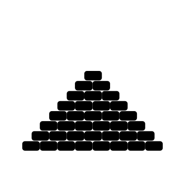Then he raised stones up from the ground to point to the sky—to measure it, to enter it, to defy it. Faceless hordes of unremembered menials dug the channels, pulled the ropes, piled the mud-ramps, however the megaliths came to where they now lie. Then, climbing to the tower's highest point, in word if not in deed, the hierophant would stand exposed to the terrible heavens, but fixed in place, centered like a cyclopean eye.
He grew adept at numbers and the movement between them. Adding, subtracting: how much more or less in the granary today than yesterday? Multiplying, dividing: what harvest to expect from the seeds planted in the ground, how to distribute it among the people? He developed the movement into an abstruse art: how to track the movements of the celestial bodies, identify the fixed paths of the wanderers?
Music, too, because an abstruse art; the ratios between the notes were calculated; instruments began to be devised in accordance with them, flutes and panpipes and zithers. They echoed on earth the music of the spheres.
On the sides of the stones, or in secret channels burrowed between them for the burial of the dead, he would chisel and paint the holy images, stylized to the point of grotesquerie, not an image so much as a picture-sign, an ear, a hand, a foot.

When he began truly to work in stone, he made it take human shape. Each column stood, proportioned as a man in height to width; the colonnade enclosed the temple's interior like a phalanx. From within he could look out to where the sky met the horizon, or look instead to the gabled roof that shaded him from the full glare of the high heavens.
The shape of numbers in the human mind became a problem to be mapped. Geometry advanced from an adjunct to architecture to the status of a science: how to move ineluctably from these definitions and postulates to these constructions; how to project number out into time and space from the human mind, and back again.
The celestial pretensions of music, meanwhile, came under a productive suspicion. The various scales and modes of music were analyzed for their effects on the spirit; ordered sound was harnessed for earthly purposes. From a concomitant of hieratic ritual it became a tool of humane entertainment and political manipulation.
Within the temples the columns took the very shape of man, of man's body as it ought to be, the ideal form of brow and breast and thighs; and he would paint or tile the same beauty into the ceiling, the walls, the floor. But on certain display pieces in the palaces and villas he would show their real shape, frown and wart and wrinkle, for their honest friends to recognize.

At last he grew into an architecture of pointed arches, columns piled atop forests of buttressed columns, reaching out to entwine across the ceiling's ribbed vault. Above all he reveled in the height of it. The windows—these, too, arched to an arbitrary point—he glazed in brilliant hues, and so the sky entered the cathedral and yet did not invade it so much as lend it a heaven of its own.
With the fractured glass of the windows, number fractalized from the visual to the purely intellectual. From geometry to algebra; from re-constructing a known shape to tracing the infinite contours of an unknown and unknowable quantity.
Forms of chant accompanied the performance of religious duties, and forms of musical notation were developed to annotate those duties' rubrics. Soon plain chant gave way to polyphonic overlaying of various voices pursuing harmonically related melodic lines.
In the windows, in the columns' stone, on gilded wood, he composed likenesses of the holy saints, without heroic musculature but serene and supple, at first glance expressionless with eyes expressing God. These were not seen through the icons' flat surface or the motley of stained glass, but seen in them.
Then he recoiled into the austerity of the straight line and the right angle. At times he would insist on a meetinghouse no more noble than a barn, so long as the walls were whitewashed and the ceiling broad enough to hold the entire congregation. When he felt more self-important he resorted to a neoclassical grammar bleached into sparkling blankness, and no longer an open colonnade so much as a closed white marble wall.
From this austerity and abstraction new modes of calculation were born. The mutable became susceptible of mathesis; not knowing quite how he did it, he found himself tracing the movement of movement, or moving to the size of a thing from the movement around it.
And from the keyboard, extended from organ to harpsichord, piano, new concepts of music were born—a music where the source of the sound was hidden from the player, who knew it only from the air it displaces; a music where the mechanical notes follow no organic harmony but have been calculated beforehand according to irrational formulae.
Beside these unrevealing music boxes, within his otherwise undecorated halls, he hung canvases of their black-suited bourgeois founders and funders, or of the dramatic histories he aspired to relive, and benches on which to sit and contemplate both.

Soon the breadth and height of the built world became for him not expressive of the world's design so much as the design itself. Iron rails pressed the city in on itself, steel girders pierced the skyline, and soon, when he entered the megalopolis at ground level, he could see nothing of the heavens but their cylopean eye staring down at him from straight above.
The city of mathematic knowledge, too, expanded upwards until its one-time celestial anchor was hardly visible. Theorems multiplied beyond what even the wisest could grasp unaided, and a question arose whether even something as seemingly fundamental as arithmetic reasoning had any real foundation, or was no more than a house of cards.
Too, as the production of sound expanded beyond what even the most sensitive ear could harmoniously intuit, a quest began among those who sold entertainment to the music halls of the bourgeoisie to give it some other atonal basis, expressive or abstract or introspected.
In the same bohemian garrets the priests of art invented, invented, reinvented arrangements of color and line to express the fate of the human corpus in this most inventive age.

And now, has man any world to speak to, to speak to him? The city hums around him but he does not hear it; the sky looms above him but he does not feel it; his gaze has been totally enclosed within the screen he holds in his pocket.
A mathematical foundation of sorts was found—not, as had been hoped, in theory, but in practice. The digital computer's prodigious ability to encrypt and decrypt numeric codes, and to predict the optimal courses of action without even the transfer of information, allowed mathematics to run of its own accord, an agent without a principal, into various inhuman esoterica.
So music became something less for men than for machines; not the voicing of a word, but the layering of sound upon synthesized sound, to be invoked ad nauseum whenever someone wishes to hear it, from earbuds pressed into the hollows of his ear.
The patterned meshes on the screen in his pocket project a false flickering that yet captures the world's motion better, he imagines, than does the world itself. From the corner of his eye he sees rain strike the window; he hears nothing to calm his agitated soul; he turns on Rain Sounds (Eight Hours), and goes to sleep.
Language & Literature
How does man communicate the contents of his mind? What imaginative form do those contents take?

Speech. Birthed in exclamation and injunction, man's tongue soon grew accustomed to nomination and description. He had a prodigious head for words, having nowhere else to put them. Though "words," plural, is not the right one, implying segmentation. No clear line demarcated one part of speech from another; no ironic tweezers plucked one out from the rest and held it up to the light. When a word shifted the entire world shifted, with no vantage point from which to tell before from after. His volubility answered only to itself.
No literature, as yet, because no letters, but wisdom sustained within the communal memory. Herb-lore, cloud-lore, ghost-lore, whatever learning a man might need that on his own he would acquire only too late. Relayed in songs, in catalogues, in tales of heroes and tricksters who may or may not once have walked the earth, but whose exploits could still be seen in every oddly shaped rock and every bend in the river. Every word a fable.
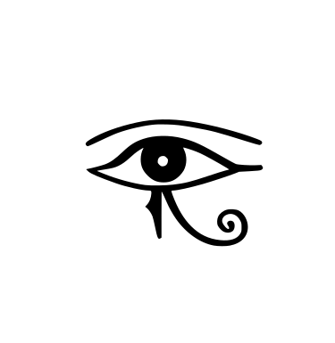The pictograph. A mere mnemonic device, as he used it at first, but even so a mental revolution, once it turned from an image evoking the thing to a sign invoking the word. The verbal flux crystallized into dried pigment on stone. Now the word could not float vaguely between its referents, but required a paradigm case; different but related things required different but related words. Too, now man's grasp of lore could be tested, not against the grasp of his companions, but against the resistance of a stone face to the eroding sands. Soon the lore came to seem something out there, different both from its object and from the subject who recited it.
Man imagined now a new kind of learning: word-lore, which is to say, world-lore. Not preserving the hard-won wisdom of experience, but discovering the order lurking within all that wisdom. Further, he imagined a new way of speaking it: not improvised from the singer's sense of the knowing needed in the moment, but arranged according to its intrinsic order. He pictured the parts of the song as if carved in stone, symmetrical in time as the hieroglyph's marks were symmetrical in space. Legendary tales were transmuted into allegorical myths and epic cycles. Consider Moses; consider Homer.
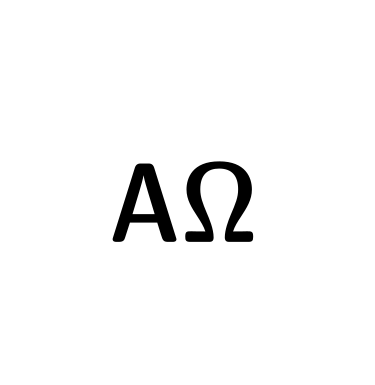Chirography. The art of writing by subtlety of hand, rather than by strength of arm. Man saw that clay would hold a mark as well as stone, and later that pigment brushed onto tree-bark dried faster and weighed less than either. As he wrote more, and more swiftly, he reduced picture to character, boiling down the words first into constituent syllables, then into atomic elements. The writing no longer captured the meaning of the discourse, but the discourse itself; the reader no longer had to reconstitute its sense, but only its sound. He began to worry that much of what had been written was only the occasion for so much hot air.
Now literature in the truest sense was born. His words had always sought to be mellifluous for the sake of being memorable. But now the page remembered the words for him, and beauty could be for its own sake, or, more precisely, the words could be shaped to be beautiful so that the page would be deemed worth transcription. Which is to say that the words could have a style. From "stylus"—the author could be known from his turn of phrase just as well as from how he turned the corners of his letters. The words no longer belonged to the common store of wisdom, but rather were attributable to one man, whose character could be known and judged from the sound of his characters, and how their arguments sounded in dispute with one another. Consider Plato; consider Vergil.
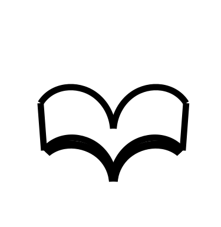The codex. Binding up the scattered leaves of parchment into an orderly array branching from a single trunk. Man sewed together into the same text as many words as could be fit onto dozens of scrolls; he imagined a codex containing the entire cosmos. Instead of channeling a continuous stream of words for as long as the scroll lasted, the codex subdivided them across hundreds of pages and lines, into numbered chapter and verse. He saw things as infinitely articulated, and extended this habit of articulation further through the newly invigorated art of punctuation. Intended at first to facilitate the fluent sight-singing of liturgical texts, it accidentally enabling as well their reading in silence.
Within these codices he inscribed not only the old fluid, ironic, reasoned discourses, but also newfangled chiming, analogical, authoritative catechisms. Rhyme served not only to make the words memorable, but to amplify the interconnectedness of things apparently far apart; even the prose rhymed in sense if not in sound. Conceptual dissonances, rather than undermining trust in what had been said, served to emphasize its mysterious truth, how a word could apply even where its application could not be understood. The words no longer had to carry their reasons with them, for words were always a cross-reference to their other uses, and their having being found elsewhere in the same order in the same codex was itself a reason in their favor. Consider Thomas; consider Dante.

Typography. The art of printing the same tokens in arbitrary order and quantity by rearrangement of reusable type. Inert in itself, but explosive combined with the alphabet's reduction of types from a few thousand to a few dozen. Now a myriad of copies required little more effort than one. Now "a copy" was not a sequence of transcribed words slightly permuted through scrivener's errors and idiosyncratic spelling, but rather a bound volume precisely identical to every other, any typo uniformly marring the entire edition. Now characters were precisely identical to every instance of themselves; new character-forms almost impossible to invent; image and text rigidly demarcated from one another.
With so many books in the world, seemingly everyone could learn to use them. Books were written both to appeal to and to stand out from their new patron, the crowd, to avoid the fate of being bound only never to be read. Too, with so many books in the world, a single volume could no longer be imagined to contain the world, but only a view of it. Instead of showing mind and world to share a structure, books suggested a chasm between them foreclosing perfection and making personality possible. Finally, with so many books in the world, their format became standardized. Word-forms became frozen in dictionary amber, and the first geniuses to publish would shape the language for all time to come. Consider Cervantes; consider Shakespeare.
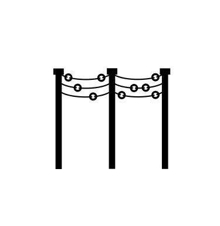The telegraph. "What hath God wrought," the first phrase sent by wire, stands synecdoche for a myriad of nineteenth-century technological advances. Pulp paper and the penny press, swelling voluminously the quantity of newsprint; the telegraph, providing worldwide fodder for the newspapers' new pages; the typewriter, erasing the intermediate step between mind and printed page; the phonograph, bypassing the written form entirely; the radio, severing the last tenuous link between communication and physical contact. By the early twentieth century words seemed both omnipresent and obsolete. The world had been replaced with words about it, and more words about these words would be mere superfluity.
Not that the crafting of words ceased—but it became a rearguard action, a fight to give verbal form to the unending torrent of verbal content. The author was compelled to recognize the inarticulate crowd as both present obstacle to and present arbiter of the success of the formal enterprise. Some submitted to the crowd's authority and so found themselves at its head, shaping words that would inflame the crowd to world-historical deeds. Others placed themselves in opposition to the crowd, and sought the word's authority from some other time than the present: in pseudo-hieroglyphic mysticism; in the judgment of history; in visionary philology. Consider Goethe; consider Joyce.
Signal. No longer merely what moved along the wire, but an all-pervading field. Everything could be encoded in and decoded as a signal; everything was information, computable and computed as a sequence of zeroes and ones. Even speech was but one variety of human signal, along with gesture, countenance, pheromone. Signal came prior to and required nothing human, but rather constituted the human, running across the neurochemical pathways of the brain as it did between the clouds and out into infinite space. Signal never changed, only the way in which each separate self received it.
The signal contains (it is believed) every word that ever has or ever could be said. And so literature died, giving way to the circulation around the web of fashion and rumor, sketches of worlds whose form could not be believed, but could be fled to as a refuge from the signal's infinite memory. Whoever still wrote undertook the task with loathing, and pursued it only to the point where he no longer felt that his failure to write sent its own even stronger message. Every word was already a tweet.
Interpretation
Through what categories does man understand the world and decide his own place within it?

Animist superstition. At first man never said that everything is connected, for he had no concept of "everything." Rather: each thing directly linked to each other. Each thing animate, its spirit speaking to the spirits around it. Each thing a reverberating word. Man but one more reverberation, no different in kind from wolf or deer. No kinds, only uncanny correspondences. To ignore these correspondences: to act at one's own peril.
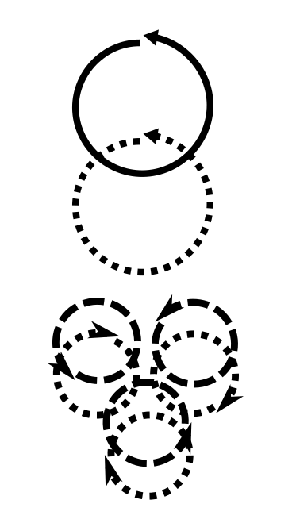Cosmic religion. In time he pictured everything in the world connected, which is to say that the world itself became for him a thing, to be imagined separate from the various things within it. They became the shadows it casts, the shape its order imprints upon the chaos. Too, he now sorted the various things in the world into different kinds, each given its unity by its own invisible spirit. Each person, each family, each town, each realm, had its own tutelary deity, a hierarchy hovering over the visible. The bonds between visible and invisible, and subordination of the former to the latter, required regular reinforcement, lest order degenerate into chaos.

Political philosophy. No longer could man be content with cosmos asserted as occult unity; unity required public articulation and verification. Putting the order into words shifted the order's meaning: the invisible hierarchy no longer paralleled the world's structure, but explained how that structure cascaded down from a single fundamental abstract principle to which each element of the visible world was equally subject. Too, confirming that the order continued beyond the glimmering surface shifted the endeavor's emphasis: man sought to identify, not the ordering spirit, but the matter that it ordered, above all his own matter; he identified himself as the thinking living thing. Although the task of articulation threatened to degenerate into an endless regression, and the task of verification into an aloof skepticism, it was clear that to act other than in accord with reason was irrational.
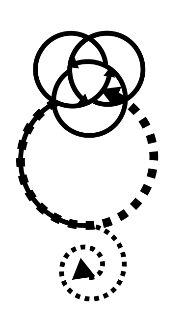Sacramental theology. Man resolved philosophy's dilemmas by elevating will to a principle coeval with reason and unity in the constitution of both man and world. Not only did reason give rise to an obligation to act in accordance with it, but the conjunction of right reason and right will was constitutive of both. The Trinity solved the emanative regress with a single word: the visible flowed from the invisible because the invisible chose for it to do so, and it was right so to choose. Similarly, it solved the problem of skepticism by giving the skeptic a defined place in the world: he was with Satan, trapped in an inward-curving spiral away from true order, and posed a danger ultimately only to himself. The Incarnation of the historical Jesus perfected all three: the ordering word chose to be man; the choices of a man are analogous to those of the ordering word; and the most important choice of all is whether or not to participate in the ordering word's mystical humanity. Analogous only, of course, and herein lay the rub: the mysteries of God, Christ, and Church could not be fully grasped, and fell inevitably under suspicion of being mere mystifications.
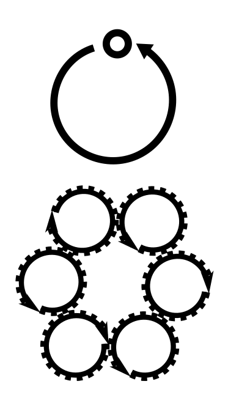Private rationality. As the haphazard and potentially hypocritical nature of analogical reasoning became increasing intolerable, man abandoned it in favor of determinate calculation. One by one the mysteries fell. Ecclesiological: instead of representing the invisible order through a visible community of believers, it was to be conclusively identified through the self's ineluctably private certitude as to the cosmos's clockwork mechanism. Christological: with the self now unaided by any visible other, let alone a society of fellow believers tracing its authority back to Christ, the significance of the particular man Jesus faded, until the insistence upon his divinity was only an arbitrary item of dogma. Trinitarian: the self's isolation dissolved the unity of reason and will; now man's reason served his will, above all by telling him to submit to the inscrutable will of the invisible. Apart from the name given to that will, theism became indistinguishable from atheism.

Humanist ideology. The self's private communion with the senseless cosmic order could not be sustained, not least because the content of "the self" was not self-evident. It had been derived by analogy with the invisibles postulated by theology, the triune God and the rebel Satan. Seeking a stable ground, he returned to those sources in more self-conscious form. Rejecting the postulation of invisible paradigms, he asserted that both man and world were not analogous to, but simply were, either the perfect unity of reason and will, or pure life-force striving again all externally imposed bounds. Or, at least, would become so, if man succeeded in seeing the world as if it were already what he imagined it might be.
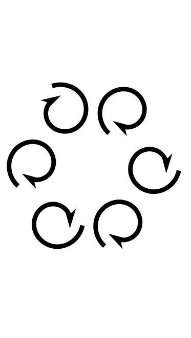Anarchistic idiocy. At last, man could connect nothing with nothing. The future promised by historicism and vitalism failed to arrive, save in a plane of unreal hypervisibility, where each thing was identified with its virtual representation. He saw no difference between man, daughter, dog, bot. The only law of reason he recognized was the ironclad calculus that determined every interaction; his only motivating desire was to escape this law by escaping interaction itself.
Persons & Performances
What objects does man recognize to represent himself and others? How does he charge their interactions with greatest meaning?

Even before he knew himself a person, man made himself a mask. A vessel for a spirit, a person who was not really there, and so was everywhere. In making a mask, man became himself personable.
The big man, and all men, wore the mask to the hunt or fight, where they became the death of the prey. Upon reaching its corpse they would honor its death-mask and release its spirit to flow through some other beast or man. Too, the big man, and all men, wore the mask to the sacred dance, where they became not only men and the big man, but Spirits, and the Big Spirit.
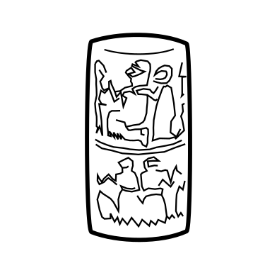Man began to busy himself across distances. The person who was not really there would sometimes be an imagined god, sometimes a ruler enclosed within palace walls, sometimes a counterpart merchant in another city. In all cases, a patriarch whose children could not but obey the signs of his voice. They knew his presence from his seal pressed into clay by a cylindrical scroll.
Loyalty to the unseen authority would be demonstrated through ritual sacrifice, with the best of the offering given to the representative of the unseen. After the blood ran down the altar, filling its intricate engravings, the representative took the auspices. If the sacrifice was not maintained, the bonds of loyalty renewed with blood, none could know what would result: perhaps an unwelcome freedom; perhaps (and what might be the same thing) a wrathful visitation from the person scorned.
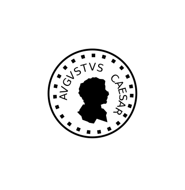With coinage, man verified—not the identity of the fictional person, which was no longer in doubt—but the integrity of the material substrate. The face of the sovereign pressed into a gold disc guaranteed its weight and purity, or at least punished their violation. "Exactness of design was to deter imitation; mutilation if that failed." Each coin a sign of the sovereign's sword, kept sheathed out of tolerance for his subjects.
The integrity of that sword was seen in the sovereign's public dispensing of justice; its strength, in triumphal processions; its tolerance, in the tragic dramas that developed from the religious rituals his subjects no longer took quite so seriously. Their subtle ironies may have called into question the righteousness of his rule, but they did so only to answer the question in the affirmative. These performances never forgot their sacrificial origins, always concluding with formal procession from theater to temple.
Man wore a coat of arms to declare himself—or decline to do so, choosing rather the black surcoat of the anonymous knight errant, with his face to be revealed only after trial by combat. Even when seen, the meaning of the coat was emblematical, its precise decryption known only to the bearer and his friends. The coat's centrality was the result of sovereignty being distributed throughout the population, each man through violent action embodying the divine law of peace. The pope, too, has his papal arms.
If proper interpretation of other persons inevitably risked violence, it was still figured as an essentially peaceful endeavor. The paradigmatic performance of personhood was the bloodless sacrifice of the Eucharist, at which Christ's invisible presence could be read in the pale wafer elevated for all to see, and the pax could be exchanged between prelate and prince and on down the social hierarchy. In the fields outside the commoners gathered around to put on rude mystery pageants, showing in comic light the obtuseness of Christ's torturers, the pride of the scribes and Pharisees, the ambivalence of Pilate.

Under the flag man rallied around a simplified image of his nation's spirit—or declined to do so, flying a neutral's flag until the last minute and then raising the Jolly Roger. Adopting the opposite of the Black Knight's modus operandi, the Pirate acted as an agent of chaos in a world increasingly enmeshed in man-made laws. One was born into a nation, but could always leave it; the pirate nation was universal.
The nation's spirit could be seen around the person of the monarch in the pomp of the courtly masque, and heard in the stream of rhetoric issuing from the pulpits of the national churches. Its content was most fully articulated in historical dramas depicting the spiritual struggles of the sovereign's forbears, and in romances depicting the moral virtues expected of each citizen. While heroism lay in ordinary loyalty, its success often depended on pirate attack or other extraordinary maritime disaster. These fatal ironies were not lost on the audience, but that audience saw its own face on the other side of the stage, and knew to keep its response within bounds.

Man ascribed each logo to the imaginary penmanship of a corporate body, a legal person, a commercial brand. Its putative signature verified the reality of the goods upon which it was mass-imprinted, but not by the physical impossibility of forgery; to the contrary, its mimetic power depended on ease of reproduction. Rather, it proved itself by legal prohibition, a matter of trademark. To "pirate" now meant only to defy such legal fictions.
The corporate person gained plausibility with each purchase of its branded product, just as the state with each casting of a ballot marked with the insignia of its sponsoring party; and with each appearance of an advertisement, or the political equivalent of advertisement, the party rally. The very possibility of such persons was made plausible by those spectacular advertisements for bourgeois life itself, the non-profit opera and ballet companies, and then the for-profit movie. Within these theaters civic concerns gave way entirely to romantic ones: the lights dimmed, and each person knew the show to be for everyone, but imagined it performed for himself alone.
Now man makes himself an avatar, an image interchangeable with the fictional persons he creates. Human face, stone statute, garish cartoon, or primary-colored blob, inscribed within a digital disc picked out as it floats past him on the digital flood. Represents nothing, it simply is; sincere versus false, lawful versus lawless, do not arise.
The spectacle, too, is now entirely virtual, its performance entirely individualized. The video game lets each player choose his own adventure, so long as he remain entirely within the impersonally determined bounds. The best games represent the unseen programmer to be the player's antagonist, while representing his final victory to be inevitable. Even interaction with non-fictional persons takes on peculiar forms: the livestream in which one player's consumption of the game's content becomes itself content for his fans; the social media site in which users face off against each other as if in a massive free-for-all tournament.
Energy, Family, Finance, Violence
What economic constraints does man face in production of goods? In reproduction of the species? In distribution of the profits? In resolution of conflict?
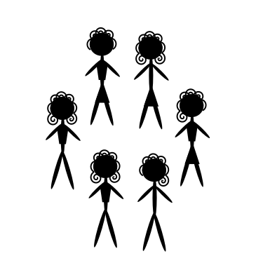On his own, homo sapiens is a beast or a god; within the merest glimmer of a communal context, he becomes a man. The primitive clan did little to withdraw man from the bestial state. He still lived under the stars, drew his sustenance from hunting and gathering. If he built himself a hut, so too do beavers; if he hunted in groups, so too do wolves; if he saved fruits and nuts from one month to the next, so too do squirrels. But what it did was enough. It required him to live as a man among men.
The primitive clan was both knit together and entwined with foreign clans through kinship networks. The clan itself had power to tie and untie the kinship knots that shaped it. Not through an abstract juridical framework—the only rules were ceremonial injunctions, "women of the Hawk must marry men of the Otter." Rather, through the thorough subjection of all social relations to the community's informal judgment. Plural marriage might be permitted, and, when the male population was substantially reduced by violence, positively encouraged. But no man would have more than a handful of wives; to take a wife was a kind of boast, and the clan would not tolerate a man with too high an opinion of himself.
A big man could undoubtedly exert influence. But enduring authority would have meant a tangible claim on the other men of the clan, and the clan could recognize no such claim. No man could "owe" anything to another; there were no historically enduring asymmetric relationships. The ties of kinship did not condition the social interaction between two men, but created the conditions of possibility for their interaction, which then proceeded without further formal structure. Even "husband" and "wife" are imprecise, falsely suggesting an obligation of fidelity. More accurately, a woman could leave her man for another, if the community found her choice understandable; and if he killed her in revenge, that would be subject to the same test.
This is not to say that man was free. His life depended on the clan's esteem of his position within it, and he could not afford to disrespect its judgments; he might be required to defend both it and himself from it, first with words and then with weapons, although armed conflict between unrelated groups was rare. Nor was woman free. If "husband" and "wife" were unknown words, "man" and "woman" were not, and each side took the other as necessary antagonist. Entirely dependent on the plausibility of their boasts, men feared most of all the women's laughter. Against this laughter they gathered, initiated themselves with blood and pain into a brotherhood from which they exiled the fairer sex. Women feared most of all the men's hands.

In time, if only gradually, man began to cultivate grain. He now remained in the same houses by the same fields, not only out of inertia, "we have been here since before anyone can remember"; but out of necessity, "we must remain to harvest the fields that we has sowed." Having taken part of the land for his own property, he could now look around and see that other groups had done the same. Some men domesticated beasts, and abandoned the sedentary agricultural for the nomad pastoral life, but retained their expanded temporal horizons. Every man could roam far in confident expectation that whatever settlements he left behind would still be where he remembered. If he brought with him the peculiar products of his own lands, he could exchange it with that of distant neighbors with dissimilar terrain.
On occasion two men would want to trade but be unable to trace a line of kinship from one to the other; they would find themselves strangers. Some such pair invented the first social fictions, "blood brothers," "ghost marriages"; so began the slow ascent from primitive promiscuity to formal kinship structure. A formal structure could endure across time independent of the whims of social judgment. Gradually such structures reached dizzying heights of hierarchical difference, differences reflected in marriage practices. Instead of casual plural marriage asserting the big man's virility, ritual polygamy represented the fertility of the archaic god-king's extensive dominions, and its friendship with the dominions of foreign rulers. The god-king wielded arbitrary power of life and death over terrified slaves; the father wielded the same power over chaste wife and obedient children.
Between the god-king and the slave laboring in the fields were arrayed a host of intermediate offices. Each owed specific obligations to each other, precisely defined by custom and precedent. These obligations were not debts in the true sense. Accounts were kept, in the course of administering the god-kings' dominions, but both sides of the ledger were under the same absolute dominion. Between distinct persons could subsist only unchanging relations of hierarchical inequality. Even an obligation finite in character was still infinite in temporal extent; delivery did not end the relationship of subordination, but rather entrenched it still deeper. The social hierarchy had a history, and one that in theory, if not in practice, would retain its shape eternally.
The hierarchy served to prevent violent struggles for position between those equally situated. But it could not do so perfectly, for it could not comprise an infinite number of gradations. Too, it created greater apparent contrasts of rank than had the informal network, which when apparently transgressed in word or deed led to far more terrible acts of vengeance. Within each realm, this violence was contained through the first law-codes, which fixed the worth of each kind of man and the price that could be exacted for his blood. Between the realms this violence was constrained only by the practical realities of warfare: underlings would only march so far from home before they began to question their allegiance, and in any case campaigns would need to end in time for the harvest.
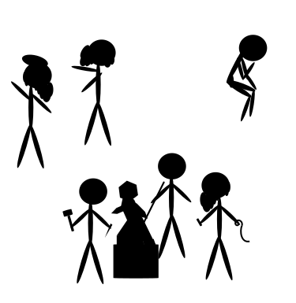In years without war moved between realms increasing numbers of merchants. They brought not only what precious trinkets they could carry on their backs, but also great cargos of iron and wine and grain, and finished goods. Armorers and clothiers and other craftsmen no longer worked exclusively as underlings of the lords whom they supplied, but increasingly for their own account, shipping their wares to the highest bidder; certain cities grew out of proportion to the surrounding countryside, gathering their wealth through trade and industry. In time a new force emerged to tame the power of the kinship hierarchy: the equality of citizens under and through their city-state's law and politics.
The city-state required a man's political status to be the central fact about him. Only a small minority were citizens-soldiers rather than subjects, which is to say, had a stake in the wealth of the city and a duty to defend it. Even the monarch, for those cities which had one, was less a king whose rule stemmed from his noble blood than a prince whom the law named as first in the realm. Patriarchy gave way to patriotism, in theory and in practice. In theory, sexual desire was demoted from its position of cosmic preeminence and replaced by the cool reason of the celibate philosopher. In practice, the marriage bond was subjected to political control, both in its formation, restricted to between the sons and daughters of citizens, and its dissolution, restricted to when civic peace required it.
Civic equality was fundamentally a matter of accounting: from each an equal contribution; to each an equal share. Accounts now running between independent citizens, their unit of measurement could no longer be merely notional. The invention of coinage solved the dilemma, and drove the city-states' development in theory and practice. In theory, it embodied the power of the sovereign, under whose formal law all were equal despite the variations in their underlying matter. In practice, from coinage was born debt in its fullest sense, that of a temporary inequality of obligation between fundamentally equal persons. If the imbalance could not be righted in time, it would be recognized as permanent. To default on a debt denominated in the coin of a sovereign was to risk falling into slavery.
Slavery was the condition required by natural law for those who proved, through their unwillingness or inability to keep their vows, unequal to the rigors of citizenship. The law of nations required a similar fate for entire peoples that broke their vows, and it was by allegations of such vow-breaking that the system of coinage and debt propagated. The city-state would pay its military in coins, then collect taxes in coins, thus creating a market for supply of its soldiers; these well-equipped soldiers would then make find pretext to make new conquests; the defeated foe would be put to work in the mines extracting precious metals to be coined; the city-state became a military empire. Recoiling from the horror of such a fall from equality, new thinkers sought to recover endangered notions of hierarchy and community, and to imagine forms of citizenship not defined by conquest.
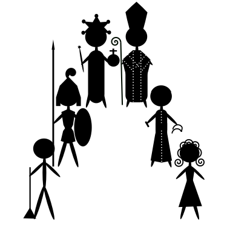When imperial expansion stalled and the empire collapsed in upon itself, two powers stepped into the gap: the barbarian lords with their scattered fiefdoms, and the Church with its spiritual sword. The lords drew power from right of conquest, cloaked by their half-plausible claim to the empire's mantle. The Church drew power from the donations its spiritual message attracted, particularly the estate of wealthy widows, and aristocratic daughters vowing of celibacy. The cities emptied out, and the people returning to the countryside became tenants of Germanic and monastic landlords. Trade never ceased, but it vastly diminished in quantity. Advances now were in the domain of agriculture: better plows, powered mills to mill the grain, better-bred grain itself.
The barbarians restored the marriage bond to its central place in the cosmic and political structure—but the Church asserted increasingly extensive authority to subordinate aristocratic marriage to the purposes of the City of God. To restrain patriarchal violence, the Church insisted that marriage formation required consent of the parties, though in practice this meant a veto on parental choice rather than a replacement for it. To harness patriarchal sexuality, the Church reinterpreted celibacy from an assertion of reason's dominance over passion into an exaltation of spiritual love over carnal lust, although in doing so it sometimes provided cover for old forms of depravity. To weaken the patriarchal kinship networks, the Church prohibited not only polygamy, but also incest and divorce, albeit looking the other way on royal mistresses, bloodline-saving marriages, and politically necessary annulments.
Finally, the Church extended these rules from nobles to commoners, who were, after all, equally Christian, and so equally citizens of the divine City. This spiritual equality had no secular analog, but gave the new hierarchy of feudal obligation a far different character from that of the archaic hierarchy preceding the rise of civil empire. The shift away from trade was accompanied by a shift away from coinage, much of which wound up in the vaults of monasteries, or melted down and the metal repurposed for religious use. But memory of the coinage system remained: transactions took place on credit, denominated in a currency few ever held, and "credit" bore a meaning halfway between trust in persons and trust in law. Law did not name a coherent system, so much as a regulating ideal.
When that ideal was transgressed, however, courts of religious jurisdiction did hold people to their sexual and financial promises. By resolving economic conflicts of both types, the Church dignified economy itself, turning it from something vaguely unseemly into an exciting field of spiritual rather than physical danger. The force of spiritual obligation was responsible also for the new approach to conflict between dominions. Since all Christians were knit together by religious ties, war between them would be a last resort, to be used only when religious remedies had been exhausted. This rule did not end intramural war, but it did change the terms on which it was justified, making those cases in which it occurred far more terrible. War against the heathen remained an obligation, and became also an opportunity (often missed) to prove the difference between the two.

The late middle ages saw a revival of robust trade networks, as the merchant city-states of the Mediterranean began to challenge the power of the feudal lords. Not long after, the discovery of the Americas, with their enormous reserve of precious metals and soon-to-be-uninhabited lands, changed things utterly. The new surplus created increasing opportunities for both trade and remunerative labor, and so increased both household wealth, and the level of wealth thought necessary for family formation. Marriages began to be delayed, and their formation meant the creation of a new household, rather than an addition to an existing one.
The private individual, built upon the Church's foundational balance of community, hierarchy, and equality, soon revolted against the Church's authority. Throughout what had been Christendom, but especially in Protestant countries that abolished clerical celibacy, and above all in England and colonial America, this new sensibility created a further revolution in marital norms. Erotic love had been something that happened, if at all, outside marriage, either in the sin of romantic dalliance or the spirit of religious devotion. Now it began to migrate inside marriage, although still subordinate to practicalities. Young men and women would select their wives and husbands independent of familial oversight, with parents exerting only a veto over children's decisions. Further, the ties of kinship that marriage would create came to seem less important than their spouse's personal virtues and vices, their ability to succeed in the private adventure of economic life. Sometimes, a partner's character would be horribly misjudged. Divorce became an accepted remedy for the most extreme cases.
New World metals revived the coinage-slavery complex on a massive scale. Empire was back in earnest, but now more mercantile than military in character. Slaves were not plundered, but purchased, and the slave-owners were not warriors but bourgeoisie, even when they failed to admit it. The trade networks were still knit together by credit, but debt instruments themselves shifted from social obligations to legal claims on the referred-to precious metals; even coins shifted from a tool of state power to a state guarantee of the metals' allegedly intrinsic value. With increasingly powerful central state authorities, such legal claims were subject to uniform legal sanctions aimed at ensuring their convertibility, and so reducing the risks of moneylending. Property law, similarly, was rationalized, with each square inch of ground assigned a legal owner.
Law had always been primarily a tool for organizing the economic lives of the rich; now it became also a tool for the more efficient regimentation of the lives of the poor. The process of legalization reached from the most casual of economic interactions to the highest levels of international politics. Either could end with the parties facing each other in court—only, in a world without a universal religious authority, the highest court remaining was the battlefield. Any violation of the law was harshly punished, and the punishment, too, was now tailored to serve a rational economic purpose, whether enforced overseas transportation, or cession of territory in an amount calibrated to the injury done.

After the rise of the ethic of industriousness and the elaboration of truly global trade networks, the conditions were set for the advent of mechanized industry. The surplus rural population crowded into the cities and factory towns. Domestic, slave, and self-directed labor decreased, all three crowded out by wage-earning on a factory floor. This work was powered by fuels that had ripened for millions of years under the sea or earth and yet were consumed in a single moment of flame. These fuels and the new vehicles they powered allowed the ever-speedier transportation of goods between markets. Remarkable technological advancements led at some times and for some people to a higher standard of living, if not quite happiness. But the new pace of life often brought instead instability and immiseration, as in slums predictably polluted by individually unforeseeable industrial accidents.
As life became increasingly fluid, marriage ceased to serve its previous social function of forging public and permanent kinship structure. It was relegated to a private domestic sphere, conceived as the opposite of the public economy: feminine rather than masculine, forgiving rather than severe, holy rather than profane. The stigmatizing of divorce no longer protected the legibility of kinship, and was abandoned on the principle that ending bad marriages would strengthen good ones. The love-marriage became a kind of private religion, the spouse a divinity. At first this new religion pretended to center on domestic agape, but soon the mask dropped, revealing an erotic cult; the bed became an altar. Urbanization, automobiles, and conception avoidance manuals led to a world of unsupervised "dates." The sex was mostly pre- rather than non-marital: boys knocked up girlfriends in parked cars, supported wife and child on a single wage, and, if she grew to hate him, divorced and remarried. Functionally, a kind of serialized polyamory.
The rise of divorce in the domestic sphere corresponded in the financial to the rise of bankruptcy—the dissolving of a legal person's identity in order to save the economic lives of the human persons associated with it. If a legal person could be dissolved when convenient, it could just as easily be created. Hosts of abstract organizational forms were invented and nested within one another to maximize the benefits of limited liability and capital lock-in for highly complex economic activity. And for finance as for family, these complex escape valves meant to provide additional stability instead ensured the inevitability of a crash. The crash resulted, at the most basic level, from the paradoxical status of debt, which had to be repaid in order for the equality of debtor and creditor to be restored, and yet had to be compounded in order for compound interest to work its wealth-producing magic.
As the industrial age progressed crashes grew increasingly large in scope. While in boom times capitalists and the laborers they employed could find ways to cooperate, busts provoked struggle over the remaining scraps, and this struggle could not be confined to the private sphere. Government inevitably played a role as mediator, and was compelled to adopt increasingly intrusive administrative regimes, whether related to the taxation of income or the negotiation of labor contracts. Nor could the struggle be confined to within a nation's borders; since economic fluctuations rippled across the globe, international relations became in large part a matter of assigning economic blame, and so a metaphorical and sometimes literal battlefield for rival solutions to the problem of stable and prosperous economic organization.
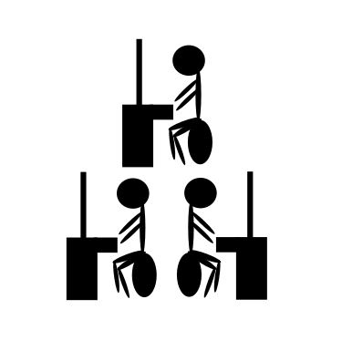Even the highly abstracted world of industry retained a foothold in reality—man drew his energy from things that flourished above the earth; sex risked family formation; finance ended in economic production. But gradually these last links were severed. The process began in the early twentieth century, when food was replaced by food products; while at first it provoked awe and horror, a century later this shift was almost forgotten, as the farms had emptied out and the vast majority of the population moved to the city, not only for factory jobs, but also, increasingly, to pursue such oxymorons as "service industries" and "knowledge work."
In the realm of sex, antibiotics and reliable oral contraception allowed children to be not only deferred, but denied altogether; abortion procedures newly safe for the mother (if not the child) filled in the gaps. Coitus was no longer a way to entertain the possibility of a life together, but only a way to entertain the self for a brief spasm. With no family to raise, the childless woman could now enter the workforce, and child-bearing women followed behind, giving up their children to anonymous caregivers. Video pornography invited first the libertine, then ever boy with a smartphone, into a labyrinth of perversion. Some rejected marriage itself as a heteronormative instrument of domination; others revised it into a capstone act of self-expression in which the spouse, of whatever gender, played only a minor part. Fertility rates cratered. Procreation was no longer central to the creation of social meaning.
Neither was physical creation central to the creation of wealth. Putative total value increased, but the new value was not located in physical goods ordinary persons could purchase; individual income and wealth stagnated. Rather, the increase came through expanded use of legal constructs to convert imagined future goods into present capital: "intellectual property," "commodities market futures," "securities derivatives." Even money itself was severed from its referent, the gold standard abandoned for a brave new world of fiat currency, and then challenged by cryptocurrency's promise of economic activity entirely free of trust, and so of social meaning. The female computer, keeper of accounts, object of suspicion, object of desire, was entirely cut out, replaced by the digital computer.
Virtual violence, too, has become omnipresent, but the virtual violence no more than the virtual sex should be mistaken for the real thing. Flesh-and-blood violence, like flesh-and-blood everything, is almost entirely absent, because law has become programmatically absolute—except among those thought incapable of productive economic activity, whose lives have accordingly been allowed to degenerate into anarchy. This underclass is policed around the edges only to prevent its disorder from spilling over into the living rooms of their putatively civilized neighbors. Ensconced in a virtual network of splendid isolation, homo sapiens is on the verge of becoming either a beast or a god.
Terms—Histories—Eternities
How does man name the time in which he lives, understand his movement through it, consider its relation to the timeless?

Primitive—first and best. Every day the first day of creation, which is to say the only day. Every hunt, every dance, every coupling, every birth, the same and only hunt, dance, coupling, birth. No time; no history.

Archaic—first in order, first from the source, according to rule. The rule is that of the timeless archetypes; time's rule is of adherence to them. The ceremony of the year preserves time's alignment with the timeless, demarcating past, present, and future only in order to immediately equate them. History names only the temporary parallax of time and timeless as the cosmic year traces its round; from the still point, the principal feature of history is that it does not change.

Classical—first in rank, of the most distinctive category, but patient of transmutation into another kind. Today is distinctive in being now, long after the foundations were laid, and before the promised renewal; in being a time of decadence and crisis, a time from which no straight line can be plotted to the timeless. To transcend the decadence, trace history to its fullest extent, imagine a cosmic year of cosmic years of movement through the classes, and know it all still not to rival the timeless. To resolve the crisis, imagine the moment's suffering to bear a timeless causal relation to that of every other moment, and know the timeless to be what holds time together, as the axle holds the wheel.

Medieval—in the middest, at the same time too late and too early to be timeless, in time for good. The timeless has revealed itself through history; it can be reached, not by abstracting or analyzing temporal vicissitudes, but by looking back and forth and tracing time's trajectory. Out and back again, like a weight flung out and drawn back by the gravity of timelessness. Whatever in history does not accord with this grand arc must be assigned some other lesser cause, archetypal or calendrical. But now, far from revealing time's adherence and alignment with the timeless, these accounts only gloss its partial departure from it, or suggest two kinds of timelessness, one above time, one below it.
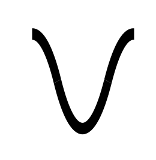Modern—having a certain manner, the manner of now, up to date, unlike just now, the past, the outmoded. But also, the manner of then, recovered, unlike just now, the time of forgetting. An historical rebirth has been achieved, for the medieval has been passed through, the classical made new again, or is about to be. The timeless still draws time back into itself, but the imperative to embrace that return, to escape time, has weakened; the timeless now offers instead a tool for making the most of the now. The now can be most fully inhabited by recognizing both its affinity to prior epochs and the unique opportunities it offers—opportunities perhaps unseen since the dawn of history.

Modernist—doing the modern, making modernity. No longer merely modern, because the merely modern, the merely new, turned out not to exist without a project that would perpetually renew it. Movement from moment to historical moment has become itself a destination. The rule aligning the timeless and time is no longer one of preservation, but of exponential acceleration, accrual endlessly heaped up upon principal, the past vanishingly small, the future infinitely vast. The timelessness of this metastasis would not comfort, but terrify; say instead that the timeless is no more than a description of what history always does.

Contemporary—at the same time as another. Sharing time, but only time, the timeless entirely forgotten, along with the ideas of modernity and history. Every now imagined the dawn of a new future free from the consequences of the past; every now trapped within the field of force put out by times temporally and causally adjacent.
IV
Predicting History in Light of Human Freedom
It would be overly fatalistic to close this book with an account of how our contemporary age is trapped within itself. Have dropped into place the last jigsaw piece, the keystone in the arc of history, the trigger springing the mousetrap that will end our humanity? This we cannot know. We may yet live to see the dawning of the eighth age of man—and since we might live to see it dawn, we ought to ask what, if anything, we can know about it before it arrives. There is some reason for optimism. Eliade, Voegelin, Arendt, McLuhan, Girard: such theorists as these came late in the Modernist era, to be sure, but they still anticipated the visage of the age to come, the age in which we now live, with more clarity than they had any right to, often despite (or because?) denying the objective determinism of history. The foregoing parts of this book have been, in many ways, only a belated distillation of these writers' foresight, which with the passing of the years has become merely insight. The present part attempts the same predictive task almost a saeculum later.
Before outlining this book's concrete predictions regarding the eighth age, we must clarify what sort of activity these predictive ventures involve. It might seem that we are engaged in something like extrapolation. After all, we already have seven data points, from the first seven ages; we need only to project them onward into the eighth. But this is incorrect. The addition of the eighth age increases the complexity of the historical schema, not by a ratio of 7 to 8, but by a ratio of 1 to 2. To see why, consider a schema containing only a single age to be perfectly simple, insofar as there is only one thing to consider. A two-age schema will not be much more complex; it has only three things to consider, the two ages and the relationship between them. With three ages, we must consider each age on its own; its relation to each other age; and what binds all three ages together—seven items in all. In general, for a schema of N ages, we must consider 2n-1 things. Or, perhaps we should say, 2n—for even an ageless schema, a schema without elements, still includes the mind that contemplates it.
In other words, an eight-age schema does not just marginally increase the complexity of a seven-age schema: it doubles it, augments it by an order of magnitude, makes it something entirely different. We should not take this mathematical language too seriously. There is no absolute measure of the complexity of a time and place. The cosmos is fractal, every corner of it infinitely compacted. Still, there are degrees of infinity (or so the mathematicians tell us), and there is value in the intuition which the combinatorial metaphor provokes. It is a way of saying: if we grasp the sequence of history up to a certain point, we do not know almost everything there is to know about what comes next; we know only the half of it. We know that the future must be consistent with the past, but we do not know the future itself. We cannot plot the seven ages on a chart and fit a line to them to see what comes next. To think that we could is a quintessentially Modernist fantasy.
What we require is not extrapolation, but divination. We pretend to ask what will the future bring?, when our real question is rather what should we do? The future, after all, is up to us, in the sense that it results from our choices, despite the fact that we cannot choose it as from a menu. Or, in truth, because of that fact: if the future were to be selected from a menu it would not be up to us after all, but up to the chef. If the absence of a menu, the truth of our historical freedom, is something we cannot bear, it is because it leaves us no way to trace our actions to their effects with the clarity necessary to shape history to our desires. Here is where divination comes in. Divination serves to translate normative into empirical uncertainty—to bring us from what should we do? to what does it say? Put differently, divination is a way of masking our doubts about our own intentions.
Such self-deception can serve at least three purposes. First, it can introduce an element of indeterminacy into the decision-making process, thus evading an opponent's predictive efforts—imagine flipping a coin to decide where to press the attack, so your enemy can't read your body language beforehand. Second, it can introduce an element of impersonality into the decision-making process, thus facilitating cooperation between parties who might otherwise be unable to come to agreement—imagine flipping a coin to decide whether you or your opponent will go first, so each of you can agree to cede your claim to first priority without losing face. Third, it can induce an element of unconsciousness into the decision-making process, thus allowing subconscious intentions to express themselves and become available for conscious recognition—imagine flipping a coin and pretending to promise to yourself to make it the basis of your decision, so you can see if you're willing to be bound by the result. In short, augury can be a tool of war; of law; or of art.
To scry the future of humanity we require tea leaves, entrails, a flock of birds, a crystal ball—some thing to which we can attribute the intentions which are in fact ours. But we cannot pick at random a prognosticatory totem, say, the shape of the tree outside my window. Such blatant arbitrariness undoes the entire enterprise, which requires obscuring the gap between empirical and normative uncertainty. It is not enough to use some random method to generate a prediction; we must find the choice of predictive method itself plausible; it must feel as if it is not a choice at all, but a judgment. Otherwise we find ourselves in an infinite regress: we cannot believe that we should do what the augury enjoins until we convince ourselves that the act of augury we performed was itself appropriate, which itself requires some further, or rather prior, act of divination.
When the shamans chose the hunting-grounds by scrying the cracks in the elk's charred shoulder-blade, they felt in their own bones that elk knew elk, and that fire made hidden truths visible. In our more skeptical age we require a more convincing story of how it is that what we hear is the thing speaking to us. Our act of augury must seem to look to the eighth age insofar as it has already arrived, such that it is already there for us to know it. The most readily available aspect of the age is the number eight. And the fact of it being the eighth age does, it must be admitted, charge it with a certain atmosphere. Seven plus one: disrupting apparent finality? Twice four: a revival of the fourth age? Two times two times two: a perfect cube, a plunge into the third dimension? But while such numerological speculations can entertain, they are ultimately too underdetermined. The eighth age being the next age in a line currently comprising ages one, two, three, four, five, six, seven—this bare fact alone will not generate the auguries we seek.
Nor will any of the other sequences discussed in Part III, whether of vessels, buildings, persons, or interpretive schemata. Each of these is already too overladen with meaning—and, which is much the same thing, too abstract, too devoid of anything besides meaning. It tells us almost nothing to say that the eighth age will be more closed, more material, more feminine, than the seventh. The thing into which we read should have the concrete roughness of the natural world untouched by human intention. Or, at least, it should have the kind of organic complexity we associate with the more-than-human. When a poet draws a half-forgotten rhyme from the collective word-hoard, or a lawyer cites the statute that has lain in the codebook unread by human eyes for a lifetime and a half, or the comms officer transmits a message encoded with a daily key spit out by a pseudorandom algorithm, he trusts the presiding muse of his discipline to transform his reliance on other men into a source of divine inspiration. No, nothing that has been said thus far will provide fit matter for haruspicy; except…
Reading the Map
Consider the map accompanying this chapter. It presents in visual form the account given in Part III's "Time—Place—Manner" of what it is tempting to call the path of the world-spirit. Of course neither the times nor the places this map marks out were found out there in nature; they were chosen by the author of this book, to present the proposed world-historical schema in its best light, and any patterns they offer for our interpretation cannot say anything except we speak through them. But this is only to say that, of war, law, and art, this is clearly an instance of the last. The more important fact is that the arc these place-times trace feels (to the author at least) meaning-laden, mysterious, congruent with and yet independent of my own design. Perhaps the reader cannot convince himself of the map's independent significance; but even if they cannot, we invite them to suspend disbelief for duration of the following geomantic enterprise. So—
Looking at the map, we seek to say what comes next, and when, and where. Regarding "when," see how the relative dates follow a clear pattern. A gap of 50100 years, then a gap of 8500, gives a ratio of roughly 6. Then gaps of 8500 and 1818 years: ratio of approximately 5. 1818 to 467 is roughly 4. 467 to 157 is roughly 3. 157 to 76 is roughly 2. The pattern requires a final ratio of roughly one, placing the eighth age's representative date somewhere around 2080 AD (which is not to say that the era will not recognizably arrive some time earlier). As for "where," simply notice how the arc of history curves north and then west, and accelerates as it goes, alternating between water and land; the question becomes, where—and for that matter, what—after the digital ocean of Silicon Valley? Three possibilities present themselves.
First—outer space; the satellite network enmeshing the earth was not a caul, but a traveling cloak. Next stop: the Moon, or Mars, as humanity reaches escape velocity. In this telling the even stages of history have each been defined by a frontier, whether the verge of the arable river valley, the outskirts of Christendom, or the Great American Plains. Up till now, the front along which civilization has encountered, subdued, and been itself transformed by that which is outside of it has always been intra-human: in the desert lurked the rebellious nomads, and beyond it the holy kingdoms of the other river valleys; outside Christendom loomed the unconverted heathen, and, less well understood, the falsely converted Mohammedans; on the Great Plains roamed the Injuns, and, across the globe, the Russian Communist menace they obscurely symbolized. But the final frontier here contemplated is of a different character, so different that there is almost nothing to be said about it, for or against.
The outer-space future pictures humanity gathering up all its strength and hurling itself into the abyss between the worlds, there to encounter something truly inhuman. The character of this future will depend entirely on the character of this inhuman something. Precisely because it is inhuman, it is difficult to say anything more of value about it. Still, we can with some confidence draw the following distinction: the inhumanity could be passive, or it could be active. If it is passive, if the abyss is simply empty, we might reasonably suspect that it will represent little more than a change in scenery, although quantity does have its own kind of quality. Whereas if the inhumanity is active, if the abyss contains truly alien life and thought, it seems we will find ourselves in one of those futures imagined in midcentury-Modernist pulp fiction, and all will depend on what kind of aliens they are.

Second—inner space; the satellites were indeed the end. There are no worlds left to conquer; we have perfectly enmeshed ourselves in a net of own making; time's arrow moves more swiftly only because it encounters less resistance; in the end it will circle the globe at the speed of light and with just as little force; history will be everywhere and nowhere. It is difficult to distinguish this possibility from the claim that there will be no eighth day, that the only way out of the contemporary impasse is to go backward, which is to say, collapse. But it is perhaps best understood as a prediction that the eighth day will be barren of human life. The contemporary age is the story of humanity distorting itself to conform to the digital world it created; the next age will dawn when the distortion is completed, whether through digital replacement, genetic modification, or simply psychic bestialization. Whatever history remains to be told, it will not be human history.
The inner-space future can be given a less dismal gloss. The previous paragraph presumed an equation between humanity and history, and between the dissipation of historical momentum and the depletion of residual humanity. But man has often longed to escape history, and the inner-space trajectory might point to just such an escape: it arcs across Europe and America only to drown in the Pacific. For hundreds of years men have looked to Oceania for an image of Edenic bliss. To endorse this picture of the eighth age is to imagine that digital technology could advance to the point where it blended seamlessly into the background, and left us living in a world that seemed the perfection of nature. Contemporary hyperreality becomes a facsimile (though not a resurrection) of primordial Hyperborea—the insular Tahiti of the soul, the palm at the end of the mind. A future fully human, and yet fully alien, because entirely ahistorical.
Finally—follow the arrow west across the Pacific; it lands in the Orient, the civilized world most alien to the story told thus far. India and Arabia diverged from the West in the medieval age, when they rejected the humane religion of Christianity in favor of Hindu mysticism or Islamic brutalism. But China diverged in the classical, when it failed both to adopt an alphabetic script and to develop a critical philosophy. The Middle Kingdom has always exerted an influence on the West, through mechanical inventions which only Europe would put to full use, economic demand which exerted a gravitational pull on European trade networks, visual abstractions which reshaped European high modernist culture. But it has always had the character of a reservoir. To say that the arc of history aims at China is to say that it will at last become the stage on which human historical consciousness works itself out.
The Chinese future is not unthinkable. Its doctrinaire communism, from a certain angle, does seems a holdover from the modernist age of ideology. But from other, it suggests that China has become a recipient and so perhaps a creative interpreter of Western influence, rather than a source of innovations it cannot itself fully utilize. It is just barely possible to imagine that Marxism with Chinese Characteristics could combine with the best of the Western human sciences into something more like a true theory of political economy. We could even imagine a converted Chairman becoming the Constantine to a new age of Christendom. Whatever the details of a putative Sinitic future, the point to be made here is that to imagine such a future is a fundamentally humanist move. It is to insist that human nature is already larger than is dreamt of in our philosophies; that the only outside impetus we need to revive the motor of history is one which is itself human, and so not actually alien.
The Eighth Day
History will not end, nor each nude soul
Solitary shed its flesh apparent
Of prejudice, grant neighbors their parole,
Become to all entirely transparent,
a longing lidless eye, a brimming bowl
Omniscient, circumspect, inconsequent;
No such utopia stoic and free
Will come to pass—but nor will it not be.
Economy will not start, no reagents
Atomic all with business transact,
In traffic swerve, unswerving in allegiance
Only to powers and interests abstract,
Their spinning steps drumming a higher sequence
Anon to populate, to toil to adapt;
One molecule so free an epicure
Ne'er will live—but something of its savour.
No cosmic foam will fill potential space,
Inflate to being each thing that might be
Sufficient good, considered case by case,
'Til each sealed star rises from the debris
Separate to flourish, no other rose displace
Within the hedgerow of infinity;
To multiply in such parti-profusion
Cannot chance—but nor is't all illusion.
No simulacrum will run to a halt,
Reveal each object only its own shadows,
The computations of its distant fault
From that which round the umbral circuit flows
Its charge, the real's insensible assault
On its despised network of outer boroughs;
There can be no ascent above dimension—
But, perhaps, somewhat like a de-declension.
No analog for it will be disclosed,
For each thing uttered standing to each other
Proportioned, to the original stands posed
By transitivity: so were the cover
Of one unrent analogon supposed,
Its subtle spirit all alike would smother;
With figured words the silence to invade
Should not be tried—but nor left unessayed.
Neither will such negation thread the eye,
For leaving every word alike unspoken
Leaves nothing left except the nonsense sigh
Of insight without act, the empty token
Of rustling leaves without a double-ply
To catch the wind, and the mast-head broken.
One should not blankly nullify—but still
Some likewise releasing a one shall will.
Between the Jacobin and Jacobite
Peace shall be; and harmonies align
Between haphazarder and hypocrite;
Communication too shall shine between
Countenance of kataphate and apophate;
In life's renewed abundance shall begin
The lives of wedding guests within the hall
Witnessing formalities immortal.
"The vane on top of the pole revolved
In the wind." "Lush fern grow on the lofty rocks."
"She blushed when he gave her a white orchid."
"They floated on the raft to sun their white backs."
"Dull stories make her laugh." "The beetle droned
In the hot June sun." "The map had an X
That meant nothing." "She called his name many
Times." The sentence is for eternity.
This book is typeset in FreeSerif, FreeSans, and FreeMono, all members of the GNU FreeFont family.